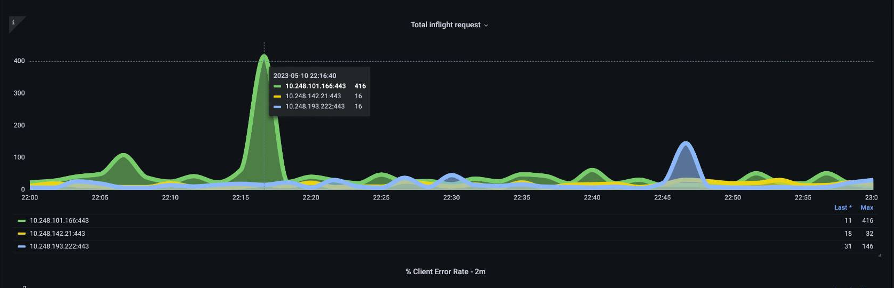
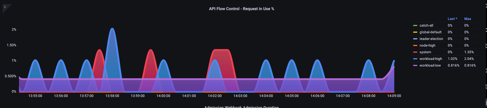
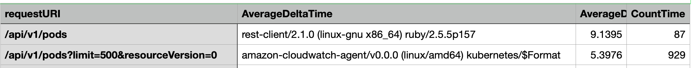
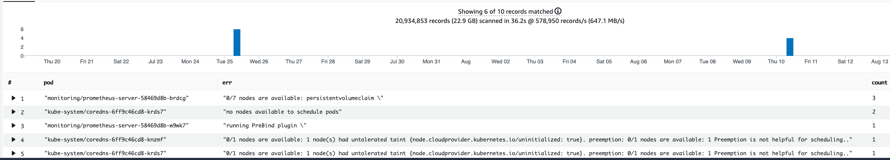
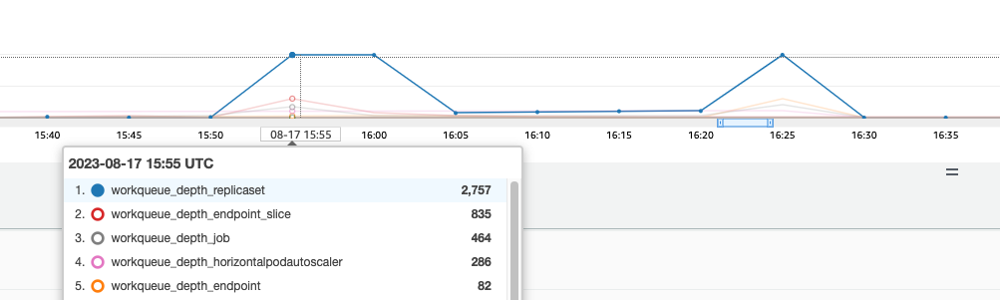

컨트롤 플레인 모니터링¶
API Server¶
API Server를 살펴볼 때 그 기능 중 하나가 컨트롤 플레인의 과부하를 방지하기 위해 인바운드 요청을 조절하는 것임을 기억하는 것이 중요합니다. API Server 수준에서 병목 현상이 발생하는 것처럼 보일 수 있는 것은 실제로 더 심각한 문제로부터 이를 보호하는 것일 수도 있습니다. 시스템을 통해 이동하는 요청량 증가의 장단점을 고려해야 합니다. API Server 값을 늘려야 하는지 결정하기 위해 염두에 두어야 할 사항에 대한 작은 샘플링은 다음과 같습니다.
- 시스템을 통해 이동하는 요청의 대기 시간은 얼마나 됩니까?
- 지연 시간은 API Server 자체입니까, 아니면 etcd와 같은 "다운스트림"입니까?
- API 서버 대기열 깊이가 이 지연 시간의 요인입니까?
- API 우선 순위 및 공정성(APF) 대기열이 우리가 원하는 API 호출 패턴에 맞게 올바르게 설정되어 있습니까?
문제가 있는 곳은 어디입니까?¶
먼저 API 지연 시간 측정 지표를 사용하여 API Server가 요청을 처리하는 데 걸리는 시간을 파악할 수 있습니다. 아래 PromQL 및 Grafana 히트맵을 사용하여 이 데이터를 표시해 보겠습니다.
max(increase(apiserver_request_duration_seconds_bucket{subresource!="status",subresource!="token",subresource!="scale",subresource!="/healthz",subresource!="binding",subresource!="proxy",verb!="WATCH"}[$__rate_interval])) by (le)
Tip
이 문서에 사용된 API 대시보드로 API 서버를 모니터링하는 방법에 대한 자세한 내용은 다음 blog를 참조하세요.

이러한 요청은 모두 1초 아래에 있습니다. 이는 컨트롤 플레인이 적시에 요청을 처리하고 있음을 나타내는 좋은 표시입니다. 하지만 그렇지 않다면 어떨까요?
위의 API 요청 기간에서 사용하는 형식은 히트맵입니다. 히트맵 형식의 좋은 점은 기본적으로 API의 제한 시간 값(60초)을 알려준다는 것입니다. 그러나 실제로 알아야 할 것은 시간 초과 임계값에 도달하기 전에 이 값이 어떤 임계값에 관심을 가져야 하는가입니다. 허용 가능한 임계값에 대한 대략적인 지침을 보려면 여기에서 찾을 수 있는 업스트림 쿠버네티스 SLO를 사용할 수 있습니다.
Tip
이 명령문의 max 함수를 확인하세요. 여러 서버(기본적으로 EKS의 두 API Server)를 집계하는 지표를 사용할 때 해당 서버의 평균을 구하지 않는 것이 중요합니다.
비대칭 트래픽 패턴¶
한 API Server [pod]는 로드가 약하고 다른 하나는 과부하가 걸리면 어떻게 될까요?이 두 숫자의 평균을 구하면 무슨 일이 벌어졌는지 잘못 해석할 수 있습니다. 예를 들어, 여기에는 세 개의 API Server가 있지만 모든 로드는 이 API Server 중 하나에 있습니다. 일반적으로 etcd 및 API 서버와 같이 여러 서버가 있는 모든 것은 규모 및 성능 문제에 투자할 때 분리되어야 합니다.

API 우선순위 및 공정성(APF)으로 전환하면서 시스템의 총 요청 수는 API Server가 초과 구독되었는지 확인하는 하나의 요소일 뿐입니다. 이제 시스템에서 일련의 대기열을 사용하므로 대기열이 꽉 찼는지, 해당 대기열의 트래픽이 삭제되고 있는지 확인해야 합니다.
다음 쿼리를 사용하여 이러한 대기열을 살펴보겠습니다.
Note
API A&F 작동 방식에 대한 자세한 내용은 다음 모범 사례 가이드를 참조하세요.
여기에서는 클러스터에 기본적으로 제공되는 7개의 서로 다른 우선순위 그룹을 볼 수 있습니다.

다음으로 특정 우선순위 수준이 포화 상태인지 파악하기 위해 해당 우선순위 그룹이 몇 퍼센트의 비율로 사용되고 있는지 확인하고자 합니다. 워크로드가 낮은 수준에서는 요청을 스로틀링하는 것이 바람직할 수 있지만 리더 선출 수준에서는 그렇지 않을 수 있습니다.
API 우선 순위 및 공정성(APF) 시스템에는 여러 가지 복잡한 옵션이 있으며, 이러한 옵션 중 일부는 의도하지 않은 결과를 초래할 수 있습니다. 워크로드에서 일반적으로 볼 수 있는 문제는 불필요한 대기 시간이 추가되기 시작하는 지점까지 대기열 깊이를 늘리는 것입니다. apiserver_flowcontrol_current_inqueue_request 지표를 사용하여 이 문제를 모니터링할 수 있습니다. apiserver_flowcontrol_rejected_requests_total을 사용하여 삭제를 확인할 수 있습니다. 버킷이 동시성을 초과하는 경우 이러한 지표는 0이 아닌 값이 됩니다.

대기열 깊이를 늘리면 API Server가 지연 시간의 중요한 원인이 될 수 있으므로 주의해서 수행해야 합니다. 생성된 대기열 수를 신중하게 결정하는 것이 좋습니다. 예를 들어 EKS 시스템의 공유 수는 600개입니다. 너무 많은 대기열을 생성하면 리더 선택 대기열이나 시스템 대기열과 같이 처리량이 필요한 중요한 대기열의 공유가 줄어들 수 있습니다. 추가 대기열을 너무 많이 생성하면 이러한 대기열의 크기를 올바르게 지정하기가 더 어려워질 수 있습니다.
APF에서 수행할 수 있는 간단하고 영향력 있는 변경에 초점을 맞추기 위해 활용도가 낮은 버킷에서 공유를 가져와 최대 사용량에 있는 버킷의 크기를 늘립니다. 이러한 버킷 간에 공유를 지능적으로 재분배함으로써 삭제 가능성을 줄일 수 있습니다.
자세한 내용은 EKS 모범 사례 가이드 API 우선순위 및 공정성 설정을 참조하세요.
API vs. etcd 지연 시간¶
API Server의 메트릭/로그를 사용하여 API Server에 문제가 있는지, API Server의 업스트림/다운스트림 또는 이 둘의 조합에 문제가 있는지 판단하려면 어떻게 해야 합니까? 이를 더 잘 이해하기 위해 API Server와 etcd가 어떤 관련이 있는지, 그리고 잘못된 시스템을 해결하는 것이 얼마나 쉬운지 살펴보겠습니다.
아래 차트에서는 API Server의 지연 시간을 볼 수 있지만, etcd 수준에서 대부분의 지연 시간을 보여주는 그래프의 막대로 인해 이 지연 시간의 상당 부분이 etcd 서버와 연관되어 있음을 알 수 있습니다. etcd 대기 시간이 15초이고 동시에 API 서버 대기 시간이 20초인 경우 대기 시간의 대부분은 실제로 etcd 수준에 있습니다
전체 흐름을 살펴보면 API Server에만 집중하지 않고 etcd가 압박을 받고 있음을 나타내는 신호(예: slow apply counters 증가)를 찾는 것이 현명하다는 것을 알 수 있습니다.
Tip
The dashboard in section can be found at https://github.com/RiskyAdventure/Troubleshooting-Dashboards/blob/main/api-troubleshooter.json

컨트롤 플레인과 클라이언트 측 문제¶
이 차트에서는 해당 기간 동안 완료하는 데 가장 많은 시간이 걸린 API 호출을 찾고 있습니다. 이 경우 사용자 정의 리소스(CRD)가 05:40 시간 프레임 동안 가장 오래걸린 호출이 APPLY 함수라는 것을 볼 수 있습니다.

이 데이터를 바탕으로 Ad-Hoc PromQL 또는 CloudWatch Insights 쿼리를 사용하여 해당 기간 동안 감사 로그에서 LIST 요청을 가져와서 어떤 애플리케이션인지 확인할 수 있습니다.
CloudWatch로 소스 찾기¶
메트릭은 살펴보고자 하는 문제 영역을 찾고 문제의 기간과 검색 매개변수를 모두 좁히는 데 가장 잘 사용됩니다. 이 데이터가 확보되면 더 자세한 시간과 오류에 대한 로그로 전환하려고 합니다. 이를 위해 CloudWatch Logs Insights를 사용하여 로그를 메트릭으로 전환합니다.
예를 들어, 위의 문제를 조사하기 위해 다음 CloudWatch Logs Insights 쿼리를 사용하여 사용자 에이전트 및 requestURI를 가져와서 어떤 애플리케이션이 이 지연을 일으키는지 정확히 파악할 수 있습니다.
Tip
Watch에서 정상적인 List/Resync 동작을 가져오지 않으려면 적절한 개수를 사용해야 합니다.
fields *@timestamp*, *@message*
| filter *@logStream* like "kube-apiserver-audit"
| filter ispresent(requestURI)
| filter verb = "list"
| parse requestReceivedTimestamp /\d+-\d+-(?<StartDay>\d+)T(?<StartHour>\d+):(?<StartMinute>\d+):(?<StartSec>\d+).(?<StartMsec>\d+)Z/
| parse stageTimestamp /\d+-\d+-(?<EndDay>\d+)T(?<EndHour>\d+):(?<EndMinute>\d+):(?<EndSec>\d+).(?<EndMsec>\d+)Z/
| fields (StartHour * 3600 + StartMinute * 60 + StartSec + StartMsec / 1000000) as StartTime, (EndHour * 3600 + EndMinute * 60 + EndSec + EndMsec / 1000000) as EndTime, (EndTime - StartTime) as DeltaTime
| stats avg(DeltaTime) as AverageDeltaTime, count(*) as CountTime by requestURI, userAgent
| filter CountTime >=50
| sort AverageDeltaTime desc
이 쿼리를 사용하여 대기 시간이 긴 list 작업을 대량으로 실행하는 두 개의 서로 다른 에이전트(Splunk 및 CloudWatch Agent)를 발견했습니다. 데이터를 바탕으로 이 컨트롤러를 제거, 업데이트하거나 다른 프로젝트로 교체하기로 결정할 수 있습니다.

Tip
이 주제에 대한 자세한 내용은 다음 블로그를 참조하세요.
Scheduler¶
EKS 컨트롤 플레인 인스턴스는 별도의 AWS 계정에서 실행되므로 측정 지표에 대한 해당 구성 요소를 수집할 수 없습니다(API Server는 예외임). 그러나 이러한 구성 요소에 대한 감사 로그에 액세스할 수 있으므로 해당 로그를 지표로 변환하여 확장 시 병목 현상을 일으키는 하위 시스템이 있는지 확인할 수 있습니다. CloudWatch Logs Insights를 사용하여 스케줄러 대기열에 예약되지 않은 Pod가 몇 개 있는지 확인해 보겠습니다.
스케줄러 로그에서 예약되지 않은 파드¶
자체 관리형 쿠버네티스(예: Kops)에서 직접 스케줄러 지표를 스크랩할 수 있는 액세스 권한이 있는 경우 다음 PromQL을 사용하여 스케줄러 백로그를 이해합니다.
EKS에서는 위 지표에 액세스할 수 없으므로 아래 CloudWatch Logs Insights 쿼리를 사용하여 특정 기간 동안 예약을 취소할 수 없었던 파드 수를 확인하여 백로그를 확인할 것입니다. 그러면 피크 타임의 메시지를 더 자세히 분석하여 병목 현상의 특성을 이해할 수 있습니다. 노드가 충분히 빠르게 교체되지 않거나 스케줄러 자체의 rate limiter를 예로 들 수 있습니다.
fields timestamp, pod, err, *@message*
| filter *@logStream* like "scheduler"
| filter *@message* like "Unable to schedule pod"
| parse *@message* /^.(?<date>\d{4})\s+(?<timestamp>\d+:\d+:\d+\.\d+)\s+\S*\s+\S+\]\s\"(.*?)\"\s+pod=(?<pod>\"(.*?)\")\s+err=(?<err>\"(.*?)\")/
| count(*) as count by pod, err
| sort count desc
여기서는 스토리지 PVC를 사용할 수 없어 파드가 배포되지 않았다는 스케줄러의 오류를 볼 수 있습니다.

Note
이 기능을 활성화하려면 컨트롤 플레인에서 감사 로깅을 켜야 합니다. 시간이 지남에 따라 불필요하게 비용이 증가하지 않도록 로그 보존을 제한하는 것도 가장 좋은 방법입니다. 다음은 EKSCTL 도구를 사용하여 모든 로깅 기능을 켜는 예제입니다.
Kube Controller Manager¶
다른 모든 컨트롤러와 마찬가지로 Kube Controller Manager는 한 번에 수행할 수 있는 작업 수에 제한이 있습니다. 이러한 파라미터를 설정할 수 있는 KOPS 구성을 살펴보면서 이러한 플래그 중 일부가 무엇인지 살펴보겠습니다.
kubeControllerManager:
concurrentEndpointSyncs: 5
concurrentReplicasetSyncs: 5
concurrentNamespaceSyncs: 10
concurrentServiceaccountTokenSyncs: 5
concurrentServiceSyncs: 5
concurrentResourceQuotaSyncs: 5
concurrentGcSyncs: 20
kubeAPIBurst: 20
kubeAPIQPS: "30"
이러한 컨트롤러에는 클러스터에서 변동이 심할 때 대기열이 꽉 차게 됩니다. 이 경우 replicaset controller의 대기열에 대규모 백로그가 있는 것을 확인할 수 있습니다.

이러한 상황을 해결하는 방법에는 두 가지가 있습니다. 자체 관리를 실행하는 경우 동시 고루틴을 늘릴 수 있지만 이는 KCM에서 더 많은 데이터를 처리하여 etcd에 영향을 미칠 수 있습니다. 다른 옵션은 배포에서 .spec.revisionHistoryLimit을 사용하여 replicaset 개체 수를 줄이고 롤백할 수 있는 replicaset 개체 수를 줄여 해당 컨트롤러에 대한 부담을 줄이는 것입니다.
다른 쿠버네티스 기능을 조정하거나 해제하여 이탈률이 높은 시스템의 압력을 줄일 수 있습니다. 예를 들어, 파드의 애플리케이션이 k8s API와 직접 통신할 필요가 없는 경우 해당 파드에 적용된 시크릿을 끄면 ServiceAccountTokenSync의 부하를 줄일 수 있습니다. 가능하면 이런 문제를 해결할 수 있는 더 바람직한 방법입니다.
지표에 액세스할 수 없는 시스템에서는 로그를 다시 검토하여 경합을 감지할 수 있습니다. 컨트롤러당 또는 집계 수준에서 처리되는 요청의 수를 확인하려면 다음과 같은 CloudWatch Logs Insights 쿼리를 사용하면 됩니다.
Total Volume Processed by the KCM¶
# Query to count API qps coming from kube-controller-manager, split by controller type.
# If you're seeing values close to 20/sec for any particular controller, it's most likely seeing client-side API throttling.
fields @timestamp, @logStream, @message
| filter @logStream like /kube-apiserver-audit/
| filter userAgent like /kube-controller-manager/
# Exclude lease-related calls (not counted under kcm qps)
| filter requestURI not like "apis/coordination.k8s.io/v1/namespaces/kube-system/leases/kube-controller-manager"
# Exclude API discovery calls (not counted under kcm qps)
| filter requestURI not like "?timeout=32s"
# Exclude watch calls (not counted under kcm qps)
| filter verb != "watch"
# If you want to get counts of API calls coming from a specific controller, uncomment the appropriate line below:
# | filter user.username like "system:serviceaccount:kube-system:job-controller"
# | filter user.username like "system:serviceaccount:kube-system:cronjob-controller"
# | filter user.username like "system:serviceaccount:kube-system:deployment-controller"
# | filter user.username like "system:serviceaccount:kube-system:replicaset-controller"
# | filter user.username like "system:serviceaccount:kube-system:horizontal-pod-autoscaler"
# | filter user.username like "system:serviceaccount:kube-system:persistent-volume-binder"
# | filter user.username like "system:serviceaccount:kube-system:endpointslice-controller"
# | filter user.username like "system:serviceaccount:kube-system:endpoint-controller"
# | filter user.username like "system:serviceaccount:kube-system:generic-garbage-controller"
| stats count(*) as count by user.username
| sort count desc
여기서 중요한 점은 확장성 문제를 조사할 때 자세한 문제 해결 단계로 이동하기 전에 경로의 모든 단계(API, 스케줄러, KCM 등)를 살펴보는 것입니다. 프로덕션에서는 시스템이 최고의 성능으로 작동할 수 있도록 쿠버네티스의 두 부분 이상을 조정해야 하는 경우가 종종 있습니다. 훨씬 더 큰 병목 현상의 단순한 증상(예: 노드 시간 초과)을 실수로 해결하는 것은 쉽습니다.
ETCD¶
etcd는 메모리 매핑 파일을 사용하여 키 값 쌍을 효율적으로 저장합니다. 일반적으로 2, 4, 8GB 제한으로 설정된 사용 가능한 메모리 공간의 크기를 설정하는 보호 메커니즘이 있습니다. 데이터베이스의 개체 수가 적다는 것은 개체가 업데이트되고 이전 버전을 정리해야 할 때 etcd에서 수행해야 하는 정리 작업이 줄어든다는 것을 의미합니다. 객체의 이전 버전을 정리하는 이러한 프로세스를 압축이라고 합니다. 여러 번의 압축 작업 후에는 특정 임계값 이상 또는 고정된 시간 일정에 따라 발생하는 조각 모음(defragging)이라는 사용 가능한 공간을 복구하는 후속 프로세스가 있습니다.
쿠버네티스의 개체 수를 제한하여 압축 및 조각 모음 프로세스의 영향을 줄이기 위해 수행할 수 있는 몇 가지 사용자 관련 항목이 있습니다. 예를 들어 Helm은 높은 revisionHistoryLimit을 유지합니다. 이렇게 하면 ReplicaSet와 같은 이전 개체가 시스템에 유지되어 롤백을 수행할 수 있습니다. 기록 제한을 2로 설정하면 개체(예: ReplicaSets) 수를 10에서 2로 줄일 수 있으며 결과적으로 시스템에 대한 로드가 줄어듭니다.
모니터링 관점에서 시스템 지연 시간 급증이 시간 단위로 구분된 설정된 패턴으로 발생하는 경우 이 조각 모음 프로세스가 원인인지 확인하는 것이 도움이 될 수 있습니다. CloudWatch Logs를 사용하면 이를 확인할 수 있습니다.
조각 모음의 시작/종료 시간을 보려면 다음 쿼리를 사용하십시오.
fields *@timestamp*, *@message*
| filter *@logStream* like /etcd-manager/
| filter *@message* like /defraging|defraged/
| sort *@timestamp* asc